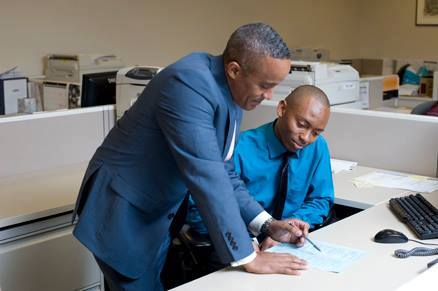
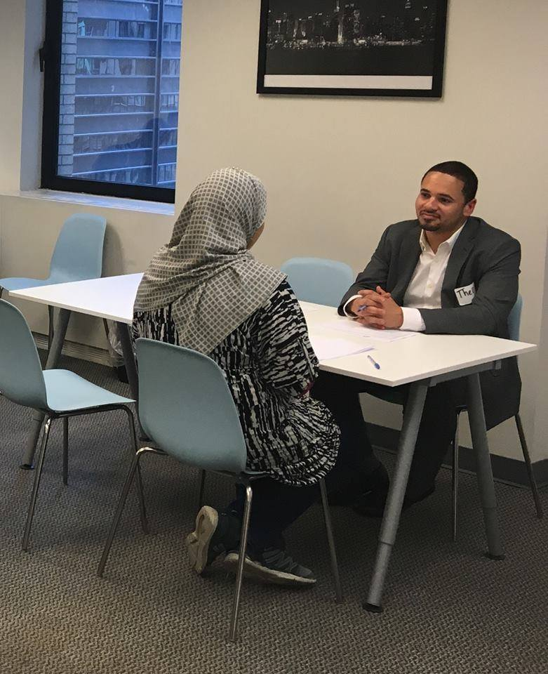
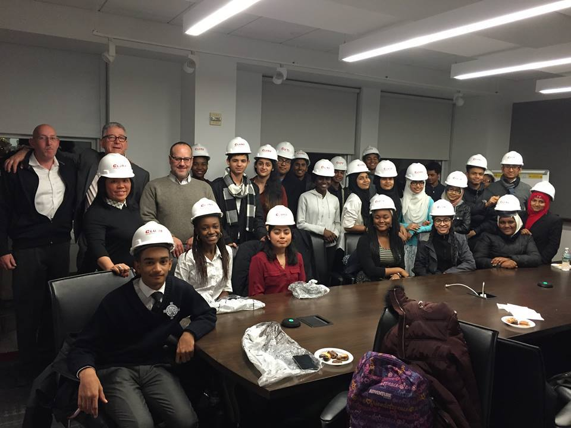
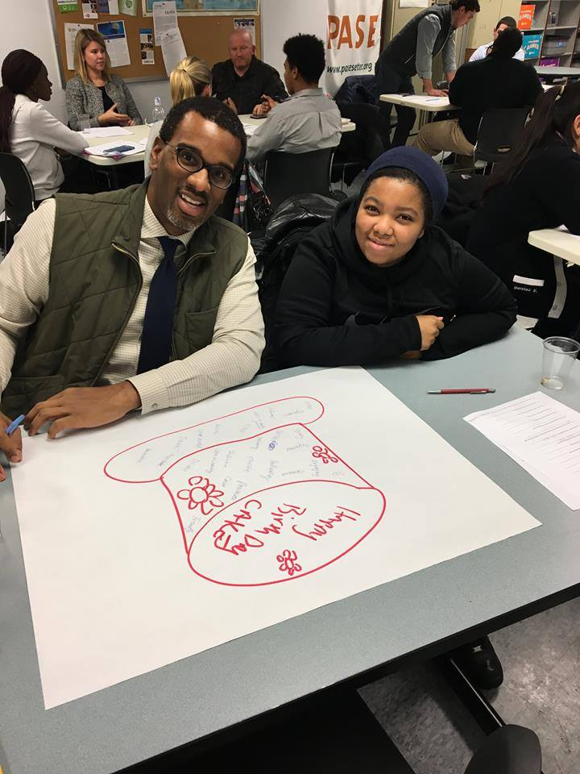

Mentor Programs
High School Success Program
The High School Success Program is open to any high school student that is an alumnus of either our Career Essentials Program or our Internship Program. We provide continued support and resources to these alumni through drop-in Career Exploration trips, college tours and an online career assessment platform. We also offer a mentor program to a select number of our high school alumni who are paired up with Futures and Options alumni currently in college. Building relationships with college students allows our mentees to learn firsthand about the college experience and provides a supportive figure to help them explore and prepare for college. Apply Here!
College Success Program
The College Success Program is open to any Futures and Options alumni that is currently in college offering drop-in events and a selective mentor program for first year students. Our alumni have the opportunity to attend networking events with professionals and career panels at a variety of businesses. Those alumni that are in our mentor program receive additional career readiness support by being paired with young professionals and taking part in job shadowing, resume reviewing, and mock interview events. Apply Here!
Resources
Career Cruising
A new web-based service that provides tools for career exploration, professional development, and post-secondary education! Career Cruising is a global leader in career development software and is suited for individuals of all ages.
Career Cruising allows students to:
- Develop increased self-awareness and get matched with potential career paths with tools like Matchmaker Assessments.
- Explore a variety of occupations through the Career Clusters tool and obtain more detailed information by listening to interviews from professionals.
- Create a plan to get into your dream college or ideal career using goal setting tools.
- Make your planning come to life by applying to real world opportunities through a seamlessly integrated job search function!
Click Here To Apply!
Career Prep Clinic
The Career Prep Clinic provides personalized support to F+O alumni as they continue to explore career options and prepare for the professional world. This program offers one-on-one help on topics such as resume writing, interview preparation and the job search process. The central goals are to support alumni in high school and college attain internships and become professionally independent in the long run.
Office hours will be held from 1pm – 3pm the first Saturday of each month. Interested students can apply to 30-60 minute blocks through this sign up and indicate what they would like to review.
Events and Workshops
- Quote From Donnelley Career Exploration Trip
Please see below for more information on upcoming opportunities!
Give Back, Get Involved!
- Career Panel on March 18th
- Networking Event at Goldman Sachs on February 25th
- Mock Interviews with our College Alumni
Alumni Share Their Stories
Click Here to get to know our Young Professionals Committee Alumni Engagement Members!